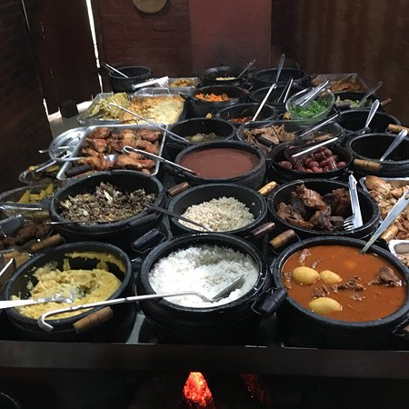
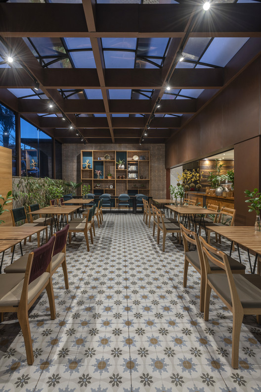

Restaurante
Página Inicial
Cardápio
Endereço


Anterior
Próximo
Menu Principal
Grand Menu
Sugestão do mês
Restaurante
O que é um Gyudon
Gyudon, é um prato japonês que consiste em uma tigela de arroz coberta com carne bovina e cebola cozidos em um molho levemente adocicado feito de dashi, shoyu e mirin. Também pode incluir shirataki e tofu.